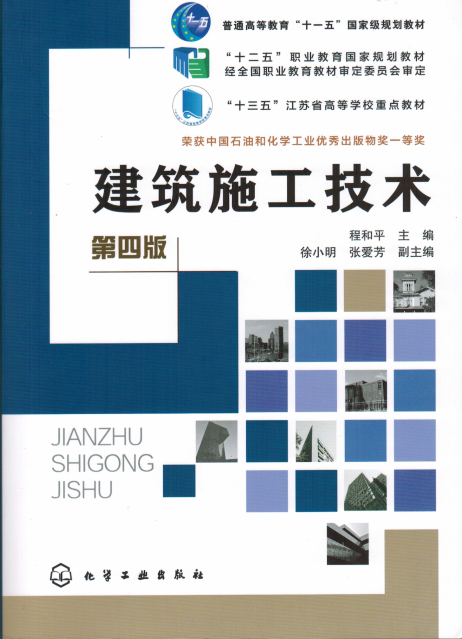

智能施工技术

介绍
除介绍智能建筑的构成、施工过程、施工质量验收、电缆与光缆线路的施工方法、智能建筑的接地形式，重点详细阐述了现代智能建筑中信息通信系统、有线电视系统、火灾自动报警与消防联动控制系统、安全技术防范系统、建筑设备监控系统、建筑办公自动化系统和综合布线系统等各子系统的系统组成、设备安装、线路敷设、系统调试和竣工验收方面的施工技术。

介绍
除介绍智能建筑的构成、施工过程、施工质量验收、电缆与光缆线路的施工方法、智能建筑的接地形式，重点详细阐述了现代智能建筑中信息通信系统、有线电视系统、火灾自动报警与消防联动控制系统、安全技术防范系统、建筑设备监控系统、建筑办公自动化系统和综合布线系统等各子系统的系统组成、设备安装、线路敷设、系统调试和竣工验收方面的施工技术。